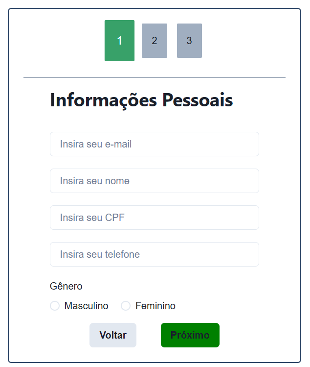

Projetos em Destaque
🌦️ API de Previsão do tempo

Tecnologias utilizadas: HTML, CSS e como linguagem foi o JavaScript
Descrição técnica:
Este projeto utiliza uma API de clima para mostrar a previsão do tempo de diversos países.
O HTML foi utilizado para estruturar os elementos da página, como os campos de busca e os locais onde a previsão é exibida. O CSS foi aplicado para deixar a interface agradável, com cores e posicionamento dos elementos. O JavaScript se conecta a uma API externa (como OpenWeatherMap, por exemplo), faz a requisição dos dados climáticos com base no país digitado e atualiza o conteúdo na tela dinamicamente.
Ver ProjetoAPI para buscar usuários no Github
Tecnologias utilizadas: HTML, CSS e como linguagem foi o JavaScript
Descrição técnica:
Esse projeto busca informações de qualquer usuário do GitHub, como nome, foto de perfil e repositórios.
O HTML define a estrutura da página, com campos de entrada e exibição dos dados do usuário. O CSS foi utilizado para criar um layout limpo e organizado. O JavaScript faz requisições à API pública do GitHub usando fetch(), coleta os dados e atualiza a interface conforme o usuário pesquisado.
Ver ProjetoFormulario para projeto do mundo senai
Tecnologias utilizadas: HTML, CSS
Descrição técnica:
Esse formulário foi desenvolvido como parte de um projeto para o evento Mundo SENAI.
O HTML cria os campos de entrada (como nome, e-mail, etc.) e os botões. O CSS estiliza o formulário, alinhando os campos e aplicando cores e fontes.
Ver ProjetoCardapio básico

Tecnologias utilizadas: HTML, CSS e como linguagem foi o JavaScript
Descrição técnica:
Esse projeto é um cardápio interativo, ideal para restaurantes ou lanchonetes.
HTML estrutura os itens do cardápio, como nomes, descrições e preços. CSS estiliza todo o layout com foco em visual atraente e acessibilidade, incluindo cores, fontes e organização dos pratos. JavaScript adiciona interatividade, como filtros por categoria (ex: bebidas, lanches, sobremesas), navegação dinâmica e atualização dos itens conforme a escolha do usuário.
Ver Projeto